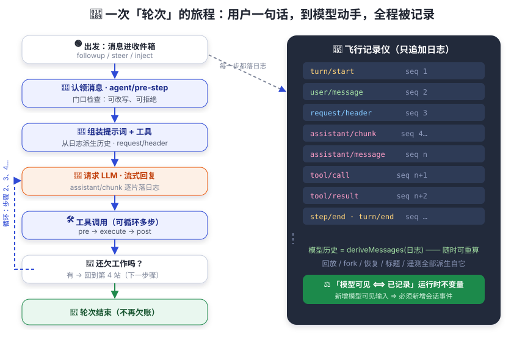

一次对话的旅程（轮次）
你发了一句话，后台发生了什么？—— 顺着「轮次」和「步骤」把整条链路走一遍。
想象一条流水线。你提交一张工单（一句话），工头（驱动器）开始处理它。工单可能要经历好几道工序：先问老师傅（模型）怎么看，老师傅说「先去看看那台机器」，于是工人（工具）去查看并回报；老师傅看了回报又说「再修一下」……像极了打工人的一天：一个需求反复派活、反复验收，直到老板点头。
直到老师傅说「没问题了」，这张工单才算处理完。dsh 里，处理一张工单的全过程叫轮次（turn），其中「问一次老师傅 + 老师傅派活」叫一个步骤（step）。一个轮次可以包含零个或多个步骤——没错，模型也会反复派活，这正是接下来要讲的「步骤循环」。

旅程详解：八站路
第 1 站 · 消息进入「收件箱」（inbox）
你发的消息、系统注入的上下文、steering（中途引导）…… 都先进入 agent 的
收件箱。收件箱有两列：next-turn（普通消息，会唤醒驱动器）和
next-step（下一步骤输入）。注入的上下文会安静地待在收件箱里，
直到别的消息把它唤醒。
第 2 站 · 驱动器被唤醒，打开轮次
有「唤醒级」工作到来，驱动器（agent-loop 插件）开始干活：在会话日志上写下
turn/start，然后认领消息（下一步骤输入 + 一个普通消息）。
第 3 站 · agent/pre-step：模型的「门口检查」
在模型看到任何东西之前，一个瀑布式事件 agent/pre-step 登场。
监听器可以改写已认领的消息，也可以直接拒绝本次步骤。
压缩、注入上下文、策略拦截都在这里发生。
（注：首次认领被拒绝或改写为空时，轮次也会关闭 —— 但日志会记录这次尝试。）
第 4 站 · 组装请求：提示词 + 工具 + 历史
驱动器写下 step/start 和 user/message，
然后调用 ctx.systemPrompt 把「提示词片段 + 工具 schema」组装起来
（system-prompt/assemble 瀑布），并从会话日志派生模型历史
（第 06 章的主角）。请求头也会被记进日志（request/header），
保证「这次请求到底发了什么」随时可重建。
第 5 站 · 请求模型：流式回复
agent/request 瀑布决定这次调用用哪个 provider/model，
然后 llm/stream 开始流式输出。assistant/chunk 逐片写进日志
（保证回放和 UI 保真），组装完成后写下 assistant/message。
第 6 站 · 工具调用（可能循环多次）
如果模型决定调用工具：tool/call 写日志 →
tools/pre-execute（审批、策略）→ tools/execute（真正执行）→
tools/post-execute（检查、溢出处理）→ tool/result 写日志。
执行细节在第 08 章展开。
第 7 站 · 还欠工作吗？—— 步骤循环
工具结果回到模型后，驱动器判断：模型还要求调工具？或下一步骤输入到了？ 是 → 认领 → 回到第 3 站，开启下一个步骤。 一个轮次就是由这样一串步骤组成的。
第 8 站 · 轮次结束
不再欠任何工作时，agent/turn-stopping（serial 事件，没有 next()）
做最后一次检查，然后 turn/end 落日志，agent 状态回到 idle。
两类「事件」别混淆
| 类别 | 例子 | 特点 |
|---|---|---|
| 持久会话事件 | turn/*、step/*、user/message、assistant/*、tool/* | 追加进会话日志，重载后依然存在 —— 「事实」 |
| 实时扩展点 | agent/pre-step、agent/request、llm/stream、tools/* | 只活在运行中，用于观察、拦截、改写 —— 「动作」 |
官方还有一条事件三域划分：会话事件（追加进日志的持久事实）、
agent 事件（agent/*，携带活跃 Agent：状态、收件箱、请求、错误……）、
能力事件（如 fs/*、tools/*，让策略和适配器挂到能力上而不引入循环依赖）。
turn = 轮次（一次对已接纳输入的排空）；step = 步骤（一次模型请求 + 其工具执行）； Round = 外层策略的迭代（如 Goal Round，见第 10 章），注意与轮次区分； agent loop = 智能体循环（驱动这一切的插件）。